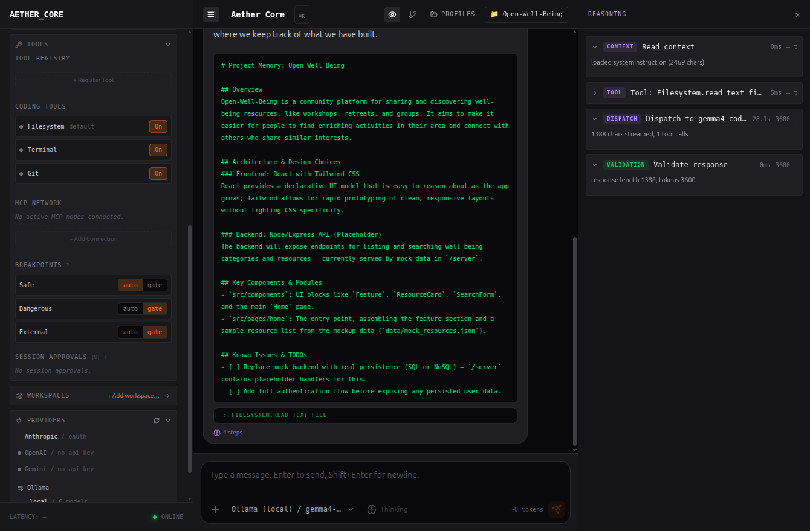
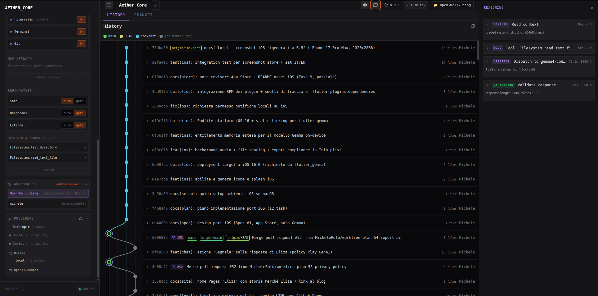
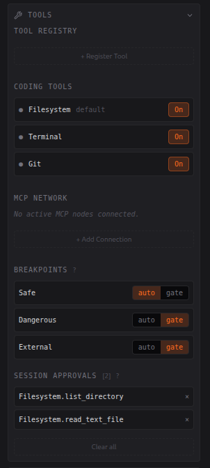
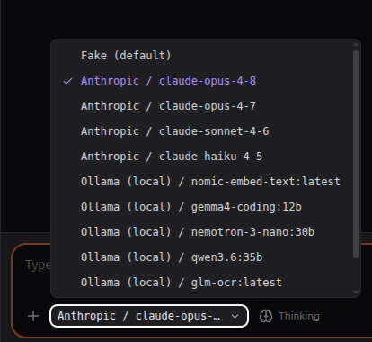

Manifesto
Benvenuti in Aether: Disclosure & Manipulation
Come l'etere in natura, una sostanza sottile e onnipresente che pervade lo spazio, Aether è l'interfaccia invisibile che si intreccia con i tuoi agenti LLM, portando alla luce i loro processi più profondi e nascosti.
Come l'etere in filosofia, il quinto elemento puro e immutabile che unisce e dà forma, Aether è il ponte che connette il tuo controllo con il vasto potenziale dell'intelligenza artificiale, rivelando il contesto e permettendoti di manipolarlo.
Il cuore di Aether risiede nel nostro motto: Disclosure e Manipulation. Non ci limitiamo a mostrarti le risposte; ti sveliamo il "perché" e ti diamo i mezzi per intervenire. Con Aether, il "pensiero" dell'agente diventa trasparente, permettendoti di esplorare il contesto, i system prompt, i token in elaborazione e i metadati con una chiarezza senza precedenti.
Ma non ci fermiamo qui. Aether ti conferisce un potere di manipolazione completo. Puoi iniettare contesti personalizzati, sovrascrivere variabili, impostare breakpoint e persino prendere il controllo diretto tramite l'interfaccia a riga di comando integrata. Il controllo è nelle tue mani.
Uniamo le funzionalità di una riga di comando (CLI) con la fluidità di una chat web moderna. L'output grezzo del terminale è chiaramente distinguibile, onorando l'heritage CLI per la sua efficienza e precisione, mentre i pannelli di ragionamento e pensiero sono evidenziati visivamente per un'analisi approfondita. È la perfetta fusione tra controllo di basso livello ed esperienza utente intuitiva.
Il nostro design non è solo estetico, è semantico. La palette "Spettro Invisibile" usa il viola per svelare l'invisibile (Disclosure), l'arancione per indicare l'azione (Manipulation) e il verde per l'eredità CLI. È un'interfaccia pensata per chi non si accontenta delle superfici, ma vuole scendere in profondità.
Aether è più di un semplice strumento di osservazione: è l'etere che rende visibile e manipolabile l'invisibile mondo dell'intelligenza artificiale. È il controllo che hai sempre desiderato sul tuo potenziale.
Benvenuto in Aether. Osservazione e controllo degli LLM.
Spettro Invisibile
Una palette semantica
Disclosure
Viola — svelare l'invisibile
Contesto, system prompt, token, ragionamento e metadati resi trasparenti. Vedi il "perché", non solo la risposta.
Manipulation
Arancione — l'azione
Inietta contesti, sovrascrivi variabili, imposta breakpoint, approva o blocca i tool. Qui hai il controllo.
CLI heritage
Verde — l'output grezzo
L'output del terminale e dei tool è chiaramente distinguibile: l'efficienza della CLI nella fluidità di una chat moderna.
In azione
Aether dal vivo
Schermate reali: un agente Ollama e Anthropic che lavorano sotto il tuo sguardo.




Uno sguardo da vicino
Dettagli



